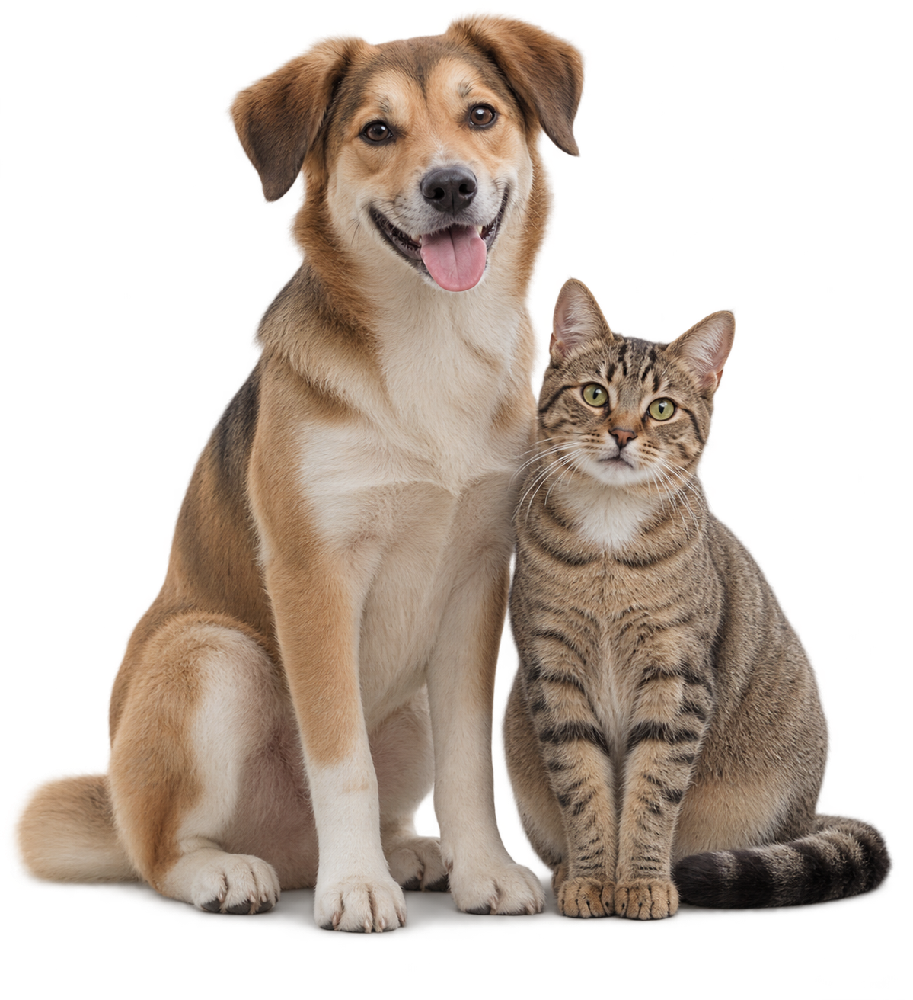
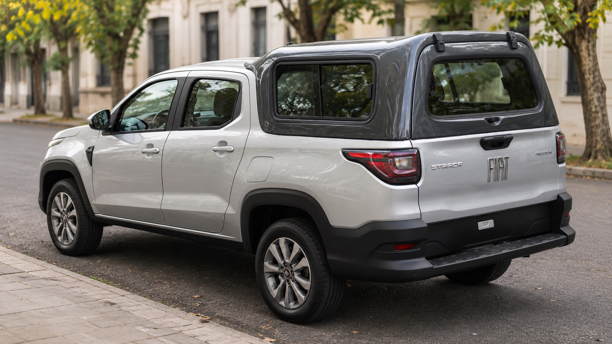
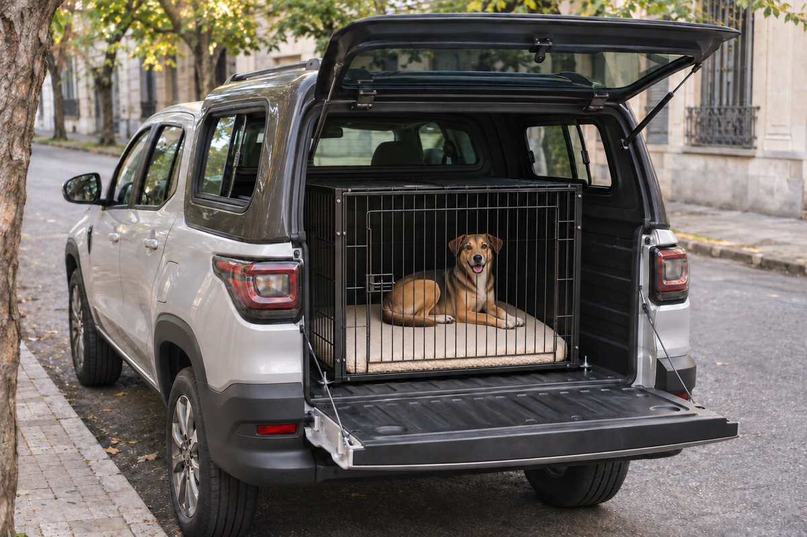

Montevideo
Viajes y traslados dentro de Montevideo.
¿Tenés que llevar a tu peque a la veterinaria o a otro lugar? Contanos el viaje y nos encargamos de trasladarlo con cuidado, seguridad y las cosas claras desde el principio.

Contanos desde dónde salen tus mascotas.
Viajes y traslados dentro de Montevideo.
Viajes y traslados en todo el país.
Queremos que viajen seguros y bien cuidados. Preparamos el espacio para cada mascota y podemos llevar hasta 2 perros y 2 gatos en un mismo viaje.
Perros
Los perros viajan seguros en un canil cerrado dentro de la cúpula, con ventilación.
Gatos
Cada gato viaja en su transportín, sujeto con el cinturón de seguridad en el asiento trasero de la camioneta. El dueño debe proporcionar el transportín.


Completás los datos del viaje y enviás el mensaje por WhatsApp.
Vemos si podemos hacer el traslado y te pasamos el precio.
Si te sirve, coordinamos los detalles del viaje.
La consulta no confirma el traslado.
Decinos de dónde salen y a dónde van. Te contamos si podemos hacer ese viaje.
Cómo viajan, qué necesitás preparar y cómo consultar un traslado.
Podemos llevar hasta 2 perros y 2 gatos en un mismo viaje. Decinos cuántos viajan para preparar el espacio de cada uno.
Los perros viajan en caniles separados y cerrados dentro de la cúpula, con ventilación. Cada gato viaja en su propio transportín, sujeto con el cinturón de seguridad en el asiento trasero. Tenés que traer el transportín de tu gato.
Hacemos traslados dentro de Montevideo y podés consultarnos por viajes al interior de Uruguay. Pasanos el origen, el destino, la fecha y la hora para confirmar si podemos hacer ese recorrido.
No. Dentro del cupo de hasta 2 perros y 2 gatos, la cantidad no cambia el precio. Contanos los datos del viaje por WhatsApp y te informamos la disponibilidad y el precio antes de coordinarlo.
Contanos sobre el viaje y coordinamos.